Billie’s Bounce
The Charlie Parker Story
Charlie Parker
依循典型的 bebop 藍調架構：鋼琴前奏、兩輪齊奏主題、輪流獨奏，再回到兩輪齊奏主題。
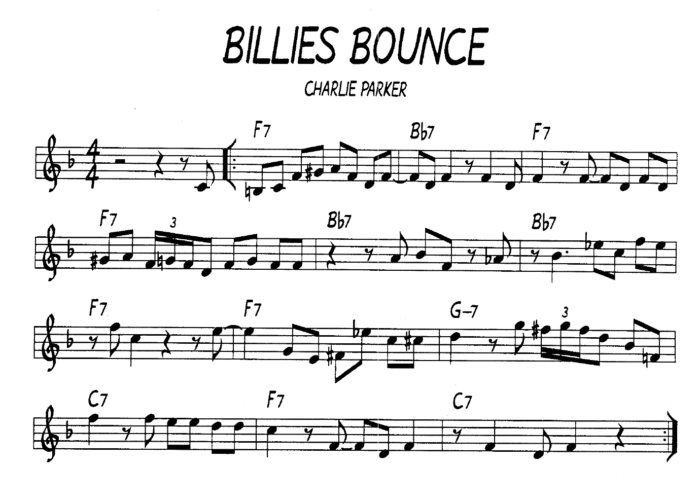
The Charlie Parker Story
Charlie Parker
依循典型的 bebop 藍調架構：鋼琴前奏、兩輪齊奏主題、輪流獨奏，再回到兩輪齊奏主題。
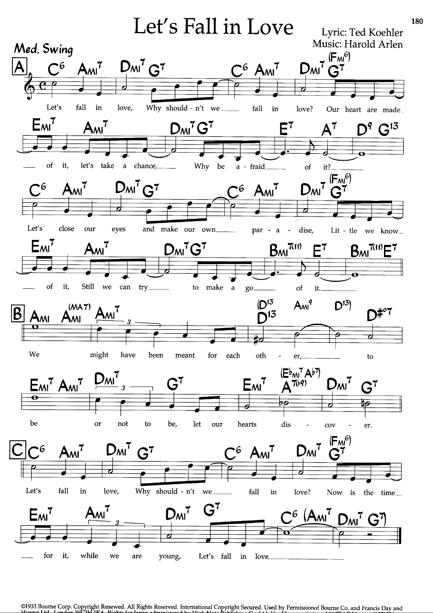
Ella Fitzgerald Sings the Harold Arlen Song Book
Ella Fitzgerald & Billy May and His Orchestra
Fitzgerald 的版本洋溢著甜美與樂觀，彷彿篤定會有圓滿結局。
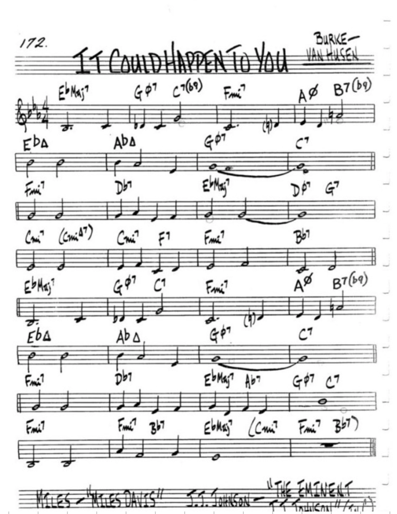

Chet Baker Sings: It Could Happen to You
Chet Baker
Baker 這段擬聲即興唱得精彩，和他的小號獨奏相似得近乎不可思議。
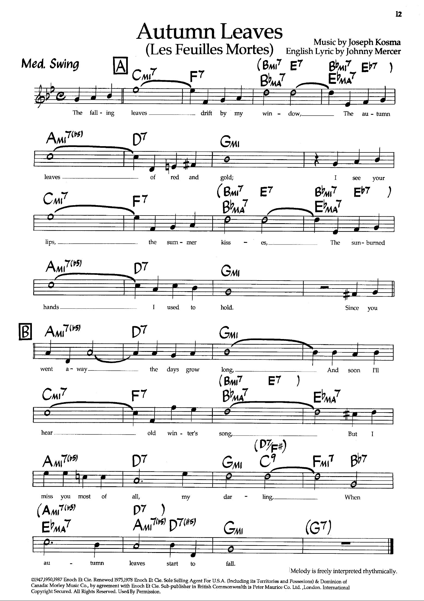

Somethin’ Else
Cannonball Adderley
這個編曲通常歸功於 Miles Davis（這裡也是他吹的小號），其實大多來自 Ahmad Jamal。
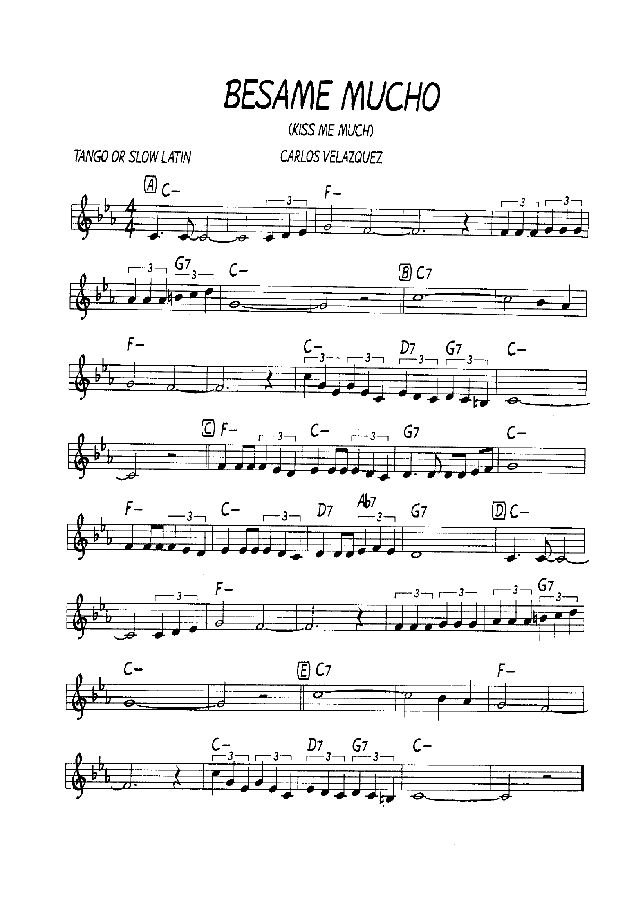

Boss Guitar
Wes Montgomery
三重奏以華爾滋的三拍子切入〈Bésame Mucho〉，一改此曲慣常的拉丁節奏，令人耳目一新。
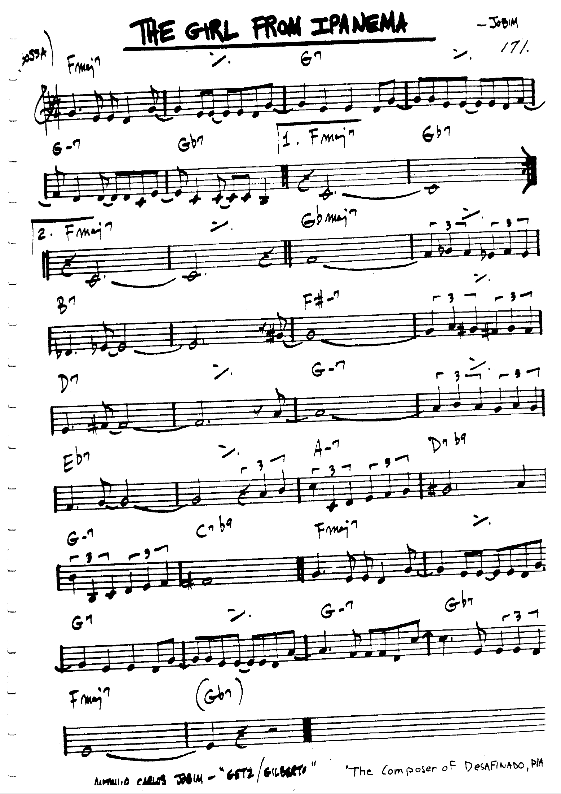
Getz/Gilberto
Stan Getz & João Gilberto
João 的妻子 Astrud 當時並非職業歌手，卻受邀參與錄音，演唱幾首歌的英文段落。
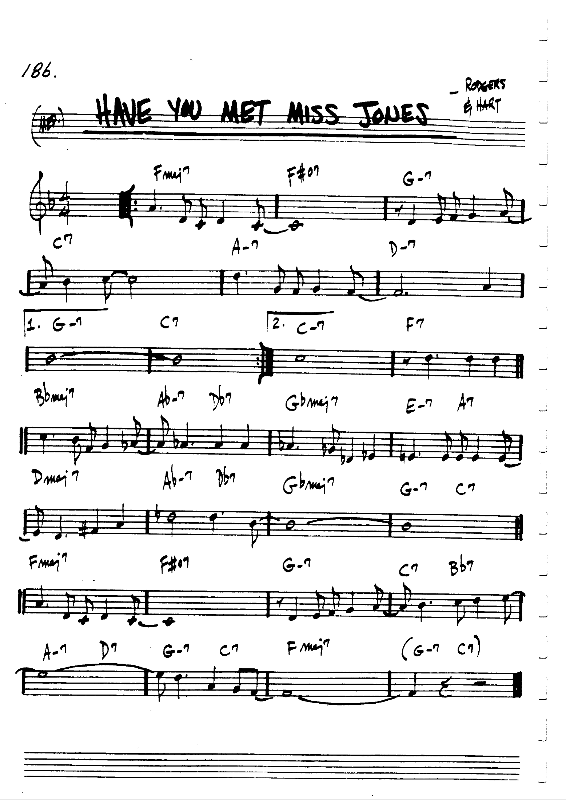
We Get Requests
Oscar Peterson Trio
最喜歡的兩段轉調橋段，都是讓人意想不到的珍品。
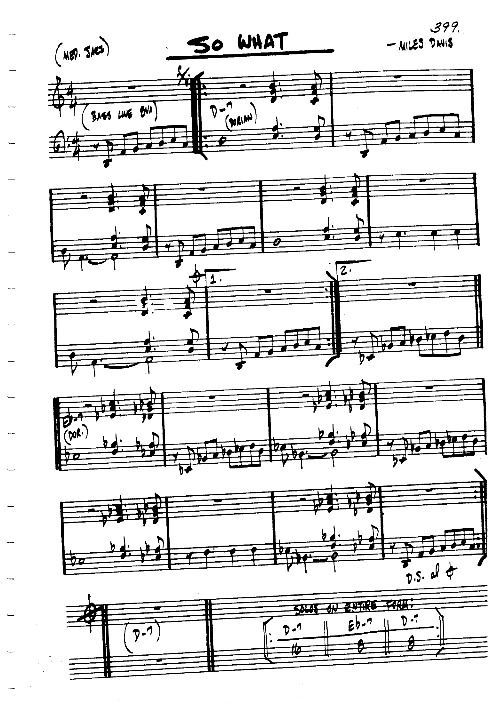
Kind of Blue
Miles Davis
它如此簡單、如此清楚。多數獨奏會在不同八度間跳來跳去，Miles 卻吹得很簡潔，像是在吹一段全新的旋律。
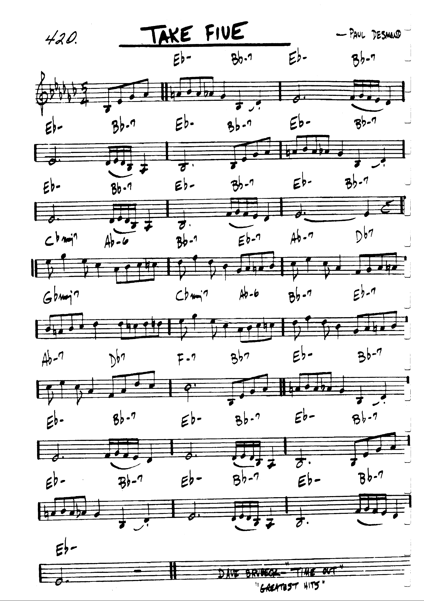

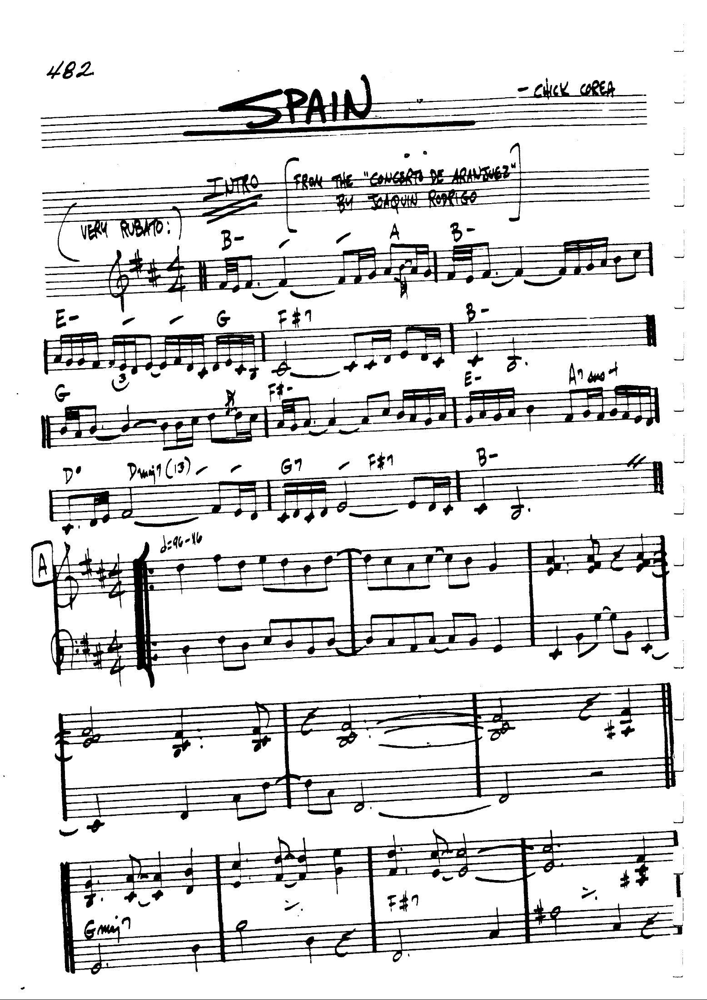
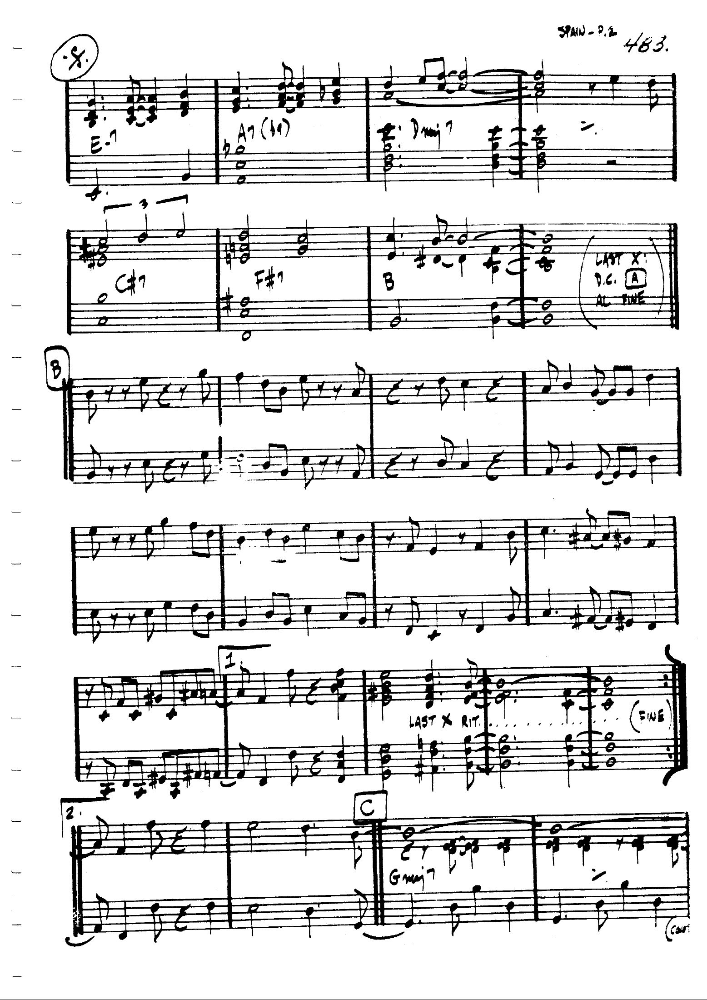
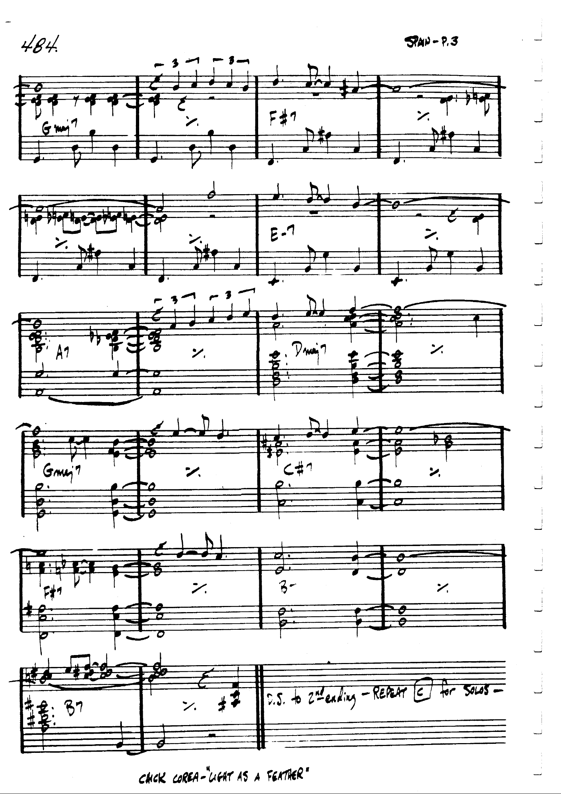

Light as a Feather
Chick Corea & Return to Forever
我拿那段主題隨意把玩、加以延伸，寫出幾段旋律，後來就成了〈Spain〉的主要主題。